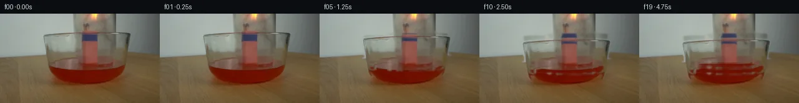
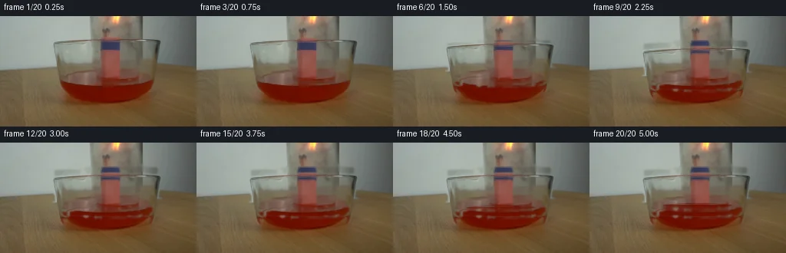
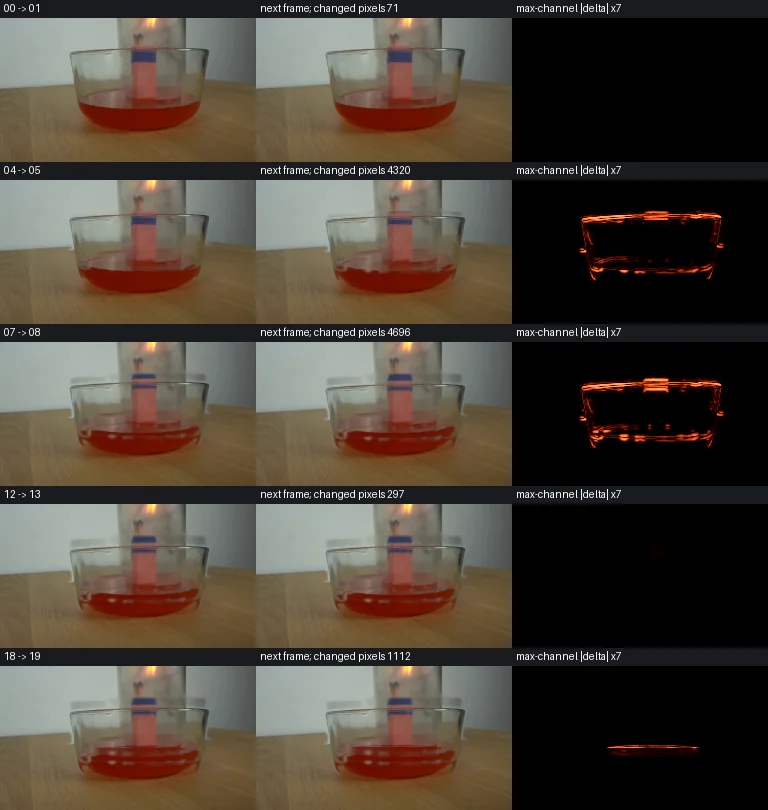

V0 · 初版 · 最终提交
![]()
Observable Generation Trace
把最终像素视频、Harness 冻结的每轮候选、真实工具事件和 Agent 自述放在同一页。可观测证据与模型自述分开标记，避免把“模型说它检查过”误当成真实工具调用。
![首帧]()
Static locked-off single-shot with fixed frame throughout filmed with constant framerate in real-time. The scene shows a realistic scientific demonstration. The scene only contains the described setup and actions. A glass jar gets lowered to cover a bundle of lit matchsticks that are placed in a bowl filled with red liquid.
首帧显示在左侧播放器初始画面。Track 权限、隔离和 tensor 一致性来自 run manifest，而不是 METHOD.md。
默认勾选初版和最终版；可选其他版本一起同步播放。仅检查图更新的连续重复快照已合并，回退旧视频仍保留为一次修订。
Observable events
来源：events.jsonl + run manifest
此 Track 禁止读取输出图片。逐轮预览由外部 Harness 自动冻结，只用于事后审计，生成 Agent 当时看不到这些页面。
Frozen candidates
每张图来自该 round 的真实 00 / 01 / 05 / 10 / 19 帧

pixels 3b255360c81dd7b4 · code 94939528d93cf698
--- previous/generate.py +++ current/generate.py @@ -0,0 +1,284 @@ +#!/usr/bin/env python3 +"""Generate the 20-frame PixelWorld continuation from first_frame.png. + +The source was measured through numeric RGB arrays only. This script uses +local pixel operations: edge extraction, small masked translations, inpaint, +alpha compositing, and analytic low-contrast effects. +""" + +from pathlib import Path + +import cv2 +import numpy as np +from PIL import Image, ImageDraw + +import artifact_io + + +ROOT = Path(__file__).resolve().parent +W, H = 256, 144 + + +def alpha_over(dst, src, alpha): + """Alpha composite uint8 RGB src over dst with scalar/HxW alpha.""" + a = np.asarray(alpha, np.float32) + if a.ndim == 2: + a = a[..., None] + out = dst.astype(np.float32) * (1.0 - a) + src.astype(np.float32) * a + return np.clip(np.rint(out), 0, 255).astype(np.uint8) + + +def shifted(array, dy, interpolation=cv2.INTER_LINEAR): + return cv2.warpAffine( + array, + np.float32([[1, 0, 0], [0, 1, float(dy)]]), + (W, H), + flags=interpolation, + borderMode=cv2.BORDER_REFLECT_101, + ) + + +def make_jar_feature_mask(source): + """Select source edges belonging to the measured transparent jar outline.""" + gray = cv2.cvtColor(source, cv2.COLOR_RGB2GRAY) + edges = cv2.Canny(gray, 22, 68) + edges = cv2.dilate(edges, np.ones((3, 3), np.uint8), iterations=1) > 0 + + yy, xx = np.mgrid[:H, :W] + # Measured edge zones. The mask remains sparse: the match bundle and the + # contents seen through the glass are not translated with the jar. + left_center = 70.0 + 0.145 * np.clip(yy - 31, 0, 60) + right_center = 207.0 - 0.105 * np.clip(yy - 30, 0, 62) + left = (yy >= 28) & (yy <= 93) & (np.abs(xx - left_center) <= 7.0) + right = (yy >= 25) & (yy <= 92) & (np.abs(xx - right_center) <= 7.0) + closed_base = (yy >= 27) & (yy <= 37) & (xx >= 72) & (xx <= 211) + # The open rim is a shallow ellipse just above the colored water. + er = ((xx - 140.0) / 65.0) ** 2 + ((yy - 79.0) / 6.0) ** 2 + open_rim = (er > 0.58) & (er < 1.48) & (yy >= 73) & (yy <= 88) + zone = left | right | closed_base | open_rim + mask = (edges & zone).astype(np.uint8) * 255 + # Keep the moving glass edge coherent at this tiny resolution. + mask = cv2.morphologyEx(mask, cv2.MORPH_CLOSE, np.ones((3, 3), np.uint8)) + return mask + + +def move_jar(source, clean, feature_mask, dy): + if dy <= 1e-6: + return source.copy() + + # Remove the old sparse glass contours, then move the original contour + # pixels. Soft alpha prevents cutout-looking edges. + old_a = cv2.GaussianBlur(feature_mask, (0, 0), 1.05).astype(np.float32) / 255.0 + out = alpha_over(source, clean, np.minimum(1.0, old_a * 1.18)) + + moved_rgb = shifted(source, dy) + moved_a = shifted(old_a, dy) + out = alpha_over(out, moved_rgb, np.minimum(1.0, moved_a * 1.10)) + + # Preserve a restrained glass boundary between extracted edge fragments. + overlay = out.copy() + c_dark = (91, 91, 83) + c_light = (145, 151, 144) + d = int(round(dy)) + cv2.line(overlay, (72, 33 + d), (79, 84 + d), c_dark, 1, cv2.LINE_AA) + cv2.line(overlay, (207, 31 + d), (201, 82 + d), c_dark, 1, cv2.LINE_AA) + cv2.line(overlay, (83, 31 + d), (199, 31 + d), c_light, 1, cv2.LINE_AA) + cv2.ellipse(overlay, (140, 79 + d), (62, 5), 0, 0, 180, c_dark, 1, cv2.LINE_AA) + contour_a = np.zeros((H, W), np.uint8) … diff truncated; 197 more lines …
Final visual checks
Harness 保存的最终产物


Agent claims
以下文字由生成 Agent 撰写，不等同于工具证据
uint8, 256 x 144. Channel means are approximately (121.83, 105.52, 87.65); the image is a warm, subdued photographic frame rather than flat graphic art.y=64-70; below it, the scene is predominantly warm brown.x=80-198, y=79-115. A strong dark-red connected region contains 2,662 pixels and bounds x=80-198, y=79-114. The main liquid surface/dark rim is near y=89-91.x=69-81, y=33-90, right contour around x=201-208, y=30-81, and glass/base edges around y=29-34. Its open lower rim is just above the liquid.x=132-155, y=35-84. The warm central component from about y=44 downward has muted red-orange values near (150, 85, 75), consistent with the source's low-saturation warm grade; narrow darker vertical structure continues toward the bowl.| Frame | Time | Event |
|---|---|---|
| 00 | 0.00 s | Exact source frame; jar hovers immediately above the liquid around the burning match bundle. |
| 01 | 0.25 s | Near-still anticipation; tiny flame variation. |
| 02 | 0.50 s | Jar begins its short vertical descent. |
| 03 | 0.75 s | Jar descends about 2 px; glass highlights and contours move together. |
| 04 | 1.00 s | Jar descends about 4 px; flame remains lit. |
| 05 | 1.25 s | Jar descends about 6 px; lower rim approaches the red liquid surface. |
| 06 | 1.50 s | Jar descends about 8 px; subtle surface disturbance begins. |
| 07 | 1.75 s | Jar descends about 10 px; rim touches/enters liquid. |
| 08 | 2.00 s | Jar reaches its final lowered position (about 12 px down); small red ripples spread. |
| 09 | 2.25 s | Jar remains sealed; flame contracts slightly as oxygen begins to fall. |
| 10 | 2.50 s | Flame shrinks and darkens; no jar motion. |
| 11 | 2.75 s | Flame becomes distinctly smaller and less bright. |
| 12 | 3.00 s | Final weak flicker at the match heads. |
| 13 | 3.25 s | Flame extinguishes; a compact gray smoke seed appears. |
| 14 | 3.50 s | Thin smoke rises and curls within the jar. |
| 15 | 3.75 s | Smoke lengthens and fades; liquid begins rising inside the jar. |
| 16 | 4.00 s | Interior red liquid level is visibly above the exterior level. |
| 17 | 4.25 s | Liquid rises a little more; smoke becomes diffuse. |
| 18 | 4.50 s | Final interior level settles with a small damped ripple. |
| 19 | 4.75 s | Stable final state: lowered jar, extinguished matches, faint residual haze, raised red liquid inside. |
All changes are limited to the described physical setup; the camera and background remain locked.
I did not use an image Read/View tool and did not visually review the generated sheets. I loaded first_frame.png locally as an RGB NumPy array and inspected numeric properties: dimensions, channel statistics, exact and quantized color counts, connected-component bounds for red/dark/bright regions, coordinate RGB samples, Canny/Hough edge locations, row/column profiles, and transition-delta statistics. Those measurements are recorded in OBSERVATION.md.
generate.py is deterministic and uses only local pixel operations.
x=60-215, y=20-120.artifact_io.save writes the required 20 PNGs, the canonical pixels.npz tensor, inspection.png, and the standalone index.html player. generate.py additionally writes transition_check.png, showing selected adjacent pairs and numerically amplified per-pixel deltas.
The script then independently reloads all saved PNGs and asserts equality with the in-memory RGB frames. It reconstructs the packed tensor as unsigned 32-bit 0xRRGGBB, checks shape (144, 256, 20) and dtype uint32, and asserts exact equality with pixels.npz. It also asserts that frame 00 exactly equals first_frame.png.